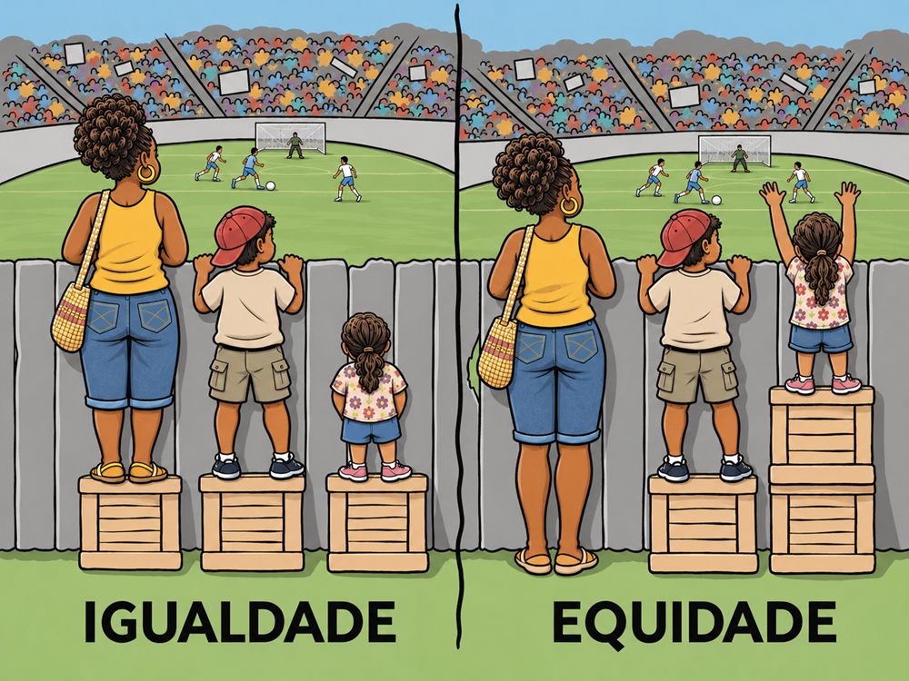

Módulo 2 | Aula 1
Equidade e Determinantes
da Saúde
O que é equidade?
Equidade é entendida como o alcance de um maior patamar de igualdade em uma dada distribuição. A equidade em saúde não é decorrente da equidade ma is geral, mas sim parte integrante fundamental desta, sendo importante avaliar suas especificidades no contexto mais geral da justiça (Amartya Sen, 2002).
Fonte: Magnific
Doença, de um modo ou outro, estaria presente em qualquer forma na vida de grande parte das pessoas. Para Sen (2002), está presente uma visão otimista ao falar em hospitais, quando na realidade grande parte das pessoas mais doentes não tem qualquer tratamento e nem acesso a possíveis formas de prevenção.
Em quaisquer discussões relacionadas àa equidade e justiça, doença e saúde precisam ser consideradaos como centrais. Ao mesmo tempo, equidade em saúde não pode ser analisada apenas no contexto da própria saúde. É necessário pensá-la no contexto mais amplo da justiça social. Equidade em Saúde não é apenas relativa à distribuição da saúde e muitos menos à distribuição do cuidado.
No contexto da justiça social, é fundamental o e acesso aos cuidados de saúde para possibilitar a concretização de potencialidades. Deve ser garantida a oportunidade das pessoas “alcançarem” boa saúde, livre de doenças e aflições evitáveis, além da própria mortalidade precoce. Nesse âmbito, cabe diferenciar a falta de oportunidades de atingir boa saúde em virtude de desigualdades sociais das escolhas individuais de não prestar atenção à própria saúde.
O conceito de equidade geral implica em que nenhum grupo social deve ser discriminado nos processos de cuidado. Para de fato atingir uma situação de equidade é necessário estar atento às diferenças.
É necessário levar em conta também como a alocação de recursos e os arranjos que vinculam a saúde a outros elementos das políticas sociais e das características da própria sociedade. Muitas vezes a melhoria das condições de saúde não é diretamente relacionada a arranjos distributivos do próprio setor, com melhoria do cuidado e melhor organização dos recursos.

Fonte: CVF
Resultados equitativos em saúde pública pressupõem redistribuições desiguais de recursos, pois são produtos de ajustes efetuados em função dos fatores biológicos, sociais e político-organizacionais determinantes das desigualdades existentes consideradas socialmente injustas. Trabalha-se com equidade no sentido de igualdade de oportunidades na consecução do bem-estar (Proadess, 2012, p. 56).
A proposta do Proadess compartilha da visão de Sen, em que o estado de saúde depende da capacidade de 'funcionar' que as pessoas têm à sua disposição, devendo ser incluídos no conceito de 'capacidade’ os diferentes fatores determinantes das necessidades, tanto os relacionados com as características biológicas e sociais dos indivíduos quanto os decorrentes da oferta e da qualidade dos serviços.
No âmbito da saúde, destaca-se como desejável a igualdade de oportunidades de acesso aos serviços de saúde e de seu uso. Um outro ponto de afinidade entre o Proadess e o pensamento de Sen (2002) é o de que a igualdade de oportunidades de acesso e uso dos serviços de saúde incorpora, além da igualdade no acesso, a igualdade relativa à distribuição dos bens e serviços de saúde e à qualidade do tratamento necessário.
Para aprofundar os conceitos sobre determinação social da saúde e desigualdades em saúde, recomendamos a leitura do artigo: A problemática teórica da determinação social da saúde, de Naomar Almeida Filho.